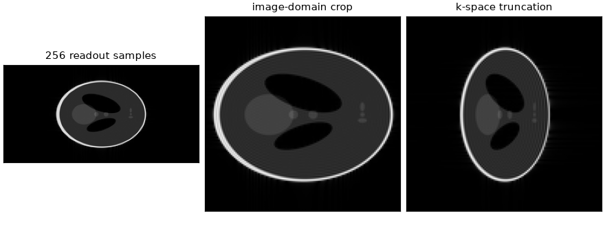
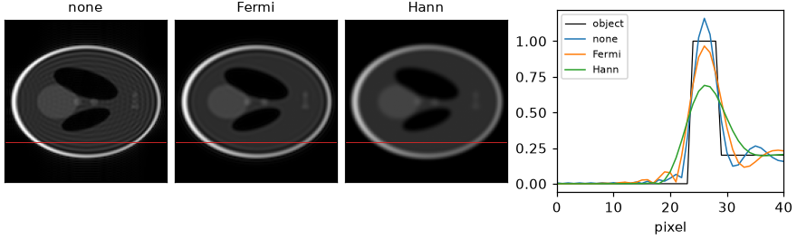
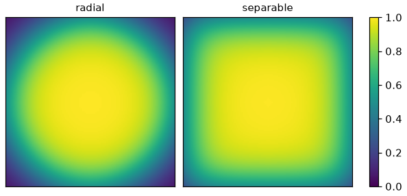

Note
Go to the end to download the full example code.
Readout oversampling and apodization#
Two operations on Cartesian k-space before it is reconstructed: removing the readout oversampling, and weighting the measurement by an apodization window to suppress the Gibbs ringing of its truncation.
The k-space is BART’s analytical Shepp-Logan phantom, evaluated at the sample positions rather than computed by a discrete Fourier transform of a sampled image, so the truncation and the oversampling are those of a continuous object.
import math
import torch
import bartorch
import bartorch.tools as bt
Readout oversampling#
A scanner digitises more samples along the readout than the prescribed matrix, so that the anti-aliasing filter of the receiver can roll off outside the field of view. Twofold oversampling halves the sample spacing along \(k_x\), which doubles the field of view along \(x\); the extent of k-space, and so the resolution, is unchanged.
The trajectory below has 128 phase encodes at unit spacing and 256 readout samples at half that spacing, in the grid units of a 128 matrix. Its first component is \(k_x\), along the last image axis.
MATRIX = 128
phase_encodes = (torch.arange(MATRIX) - MATRIX // 2).float()
readout = (torch.arange(2 * MATRIX) - MATRIX).float() / 2
ky, kx = torch.meshgrid(phase_encodes, readout, indexing="ij")
trajectory = torch.stack([kx, ky, torch.zeros_like(kx)], dim=-1)
oversampled = bt.phantom(traj=trajectory).reshape(MATRIX, 2 * MATRIX)
print(f"oversampled k-space {tuple(oversampled.shape)}")
oversampled k-space (128, 256)
bartorch.remove_readout_oversampling() transforms the readout to the
image domain, crops the field of view to the prescribed matrix and
transforms back. Discarding the outer half of the readout samples in k-space
instead keeps the doubled field of view and halves the resolution.
cropped = bartorch.remove_readout_oversampling(oversampled, MATRIX, axis=-1)
truncated = bartorch.resize(oversampled, (MATRIX, MATRIX))
The cropped k-space is compared with the k-space acquired without oversampling. The crop uses the unitary transform, whose normalization depends on the number of samples, so the two differ by the factor \(\sqrt{2}\) between the transform lengths.
reference = bt.phantom(MATRIX, kspace=True)
difference = (cropped / math.sqrt(2) - reference).abs().max() / reference.abs().max()
print(f"cropped against unoversampled k-space: {float(difference):.1e} of the peak")
cropped against unoversampled k-space: 1.1e-03 of the peak

The residual difference is the part of the truncation ringing that extends past the prescribed field of view along the readout and is cropped with it.
Apodization#
A measurement truncated at the edge of k-space is the object’s spectrum multiplied by a rectangle, and its image the object convolved with a sinc, whose side lobes produce ringing at every sharp edge. An apodization window rolls the measurement off towards the edge instead, which lowers the side lobes and widens the main lobe of the point spread function [1].
The phantom is measured on a 64 matrix and reconstructed on a 128 grid by zero-filling, which interpolates the image and makes the ringing visible between the samples of the acquired grid.
GRID, ACQUIRED = 128, 64
image = bt.phantom(GRID)
measured = bt.phantom(ACQUIRED, kspace=True)
def reconstruct(kspace):
return bartorch.fft(bartorch.resize(kspace, (GRID, GRID)), axes=(-2, -1), inverse=True)
bartorch.fermi_window() sets the radius of the half height and the
width of the transition separately, and keeps a wide passband.
bartorch.hann_window() tapers from the centre of k-space to zero at
the edge. The point spread functions are evaluated on a grid eight times
finer than the acquired one: the side lobes of an unwindowed measurement
have their zeros at the samples of the acquired grid, so a point spread
function read off that grid shows none.
fermi = bartorch.fermi_window((ACQUIRED, ACQUIRED), radius=0.8, width=0.08)
hann = bartorch.hann_window((ACQUIRED, ACQUIRED))
windows = {"none": torch.ones(ACQUIRED, ACQUIRED), "Fermi": fermi, "Hann": hann}
UPSAMPLE = 8
offset = (torch.arange(UPSAMPLE * ACQUIRED) - UPSAMPLE * ACQUIRED // 2) / UPSAMPLE
def psf(window):
fine = bartorch.resize(window.to(torch.complex64), (UPSAMPLE * ACQUIRED,) * 2)
profile = bartorch.fft(fine, axes=(-2, -1), inverse=True).abs()[UPSAMPLE * ACQUIRED // 2]
return profile / profile.max()
print(f"{'window':>6} {'side lobe':>9} {'FWHM':>7}")
for name, window in windows.items():
profile = psf(window)
lobe = float(profile[offset.abs() > 3].max())
above = torch.nonzero(profile > 0.5).flatten()
width = float(offset[above[-1]] - offset[above[0]])
print(f"{name:>6} {lobe:9.1e} {width:5.2f} px")
window side lobe FWHM
none 9.1e-02 1.00 px
Fermi 2.6e-02 1.50 px
Hann 5.6e-03 2.00 px
The side lobe is the largest value beyond three pixels of the peak, and the full width at half maximum is in pixels of the acquired grid, to the eighth of a pixel the fine grid resolves.
bartorch.apodize() multiplies k-space by either window over the axes
it names.
reconstructions = {
"none": reconstruct(measured),
"Fermi": reconstruct(bartorch.apodize(measured, kind="fermi", radius=0.8, width=0.08)),
"Hann": reconstruct(bartorch.apodize(measured, kind="hann")),
}
for name, estimate in reconstructions.items():
overshoot = float(estimate.abs().max() - image.abs().max())
print(f"{name:>6}: maximum above the object's {overshoot:+.3f}")
none: maximum above the object's +0.200
Fermi: maximum above the object's +0.119
Hann: maximum above the object's -0.144

Neither window is a positive blur: their point spread functions have negative lobes, so an apodized image can still exceed the object’s maximum. The Fermi window reduces the overshoot and keeps most of the resolution; the Hann window removes it at the cost of the widest main lobe.
Radial and separable windows#
The one-dimensional kernel is extended over the grid either on the Euclidean
norm of the normalized coordinates (geometry="radial", an ellipsoid) or
as a product along each axis (geometry="separable"), which retains more
of the corners of k-space. Bernstein et al. [1] give the ratio of
the two at the diagonal Nyquist point as 52.4 % in two dimensions and 50.7 %
in three, for a Fermi window of transition width 10/128. The radial window
is 0.5 there; the separable one is the product of the one-dimensional kernel
at \(1/\sqrt{d}\) along each of \(d\) axes. The one-dimensional
kernel at \(u\) is the window at the centre of a grid with its radius
moved to \(1 - u\).
TRANSITION = 10.0 / 128
def kernel(u):
return float(bartorch.fermi_window((4, 4), radius=1.0 - u, width=TRANSITION)[2, 2])
for dimensions in (2, 3):
separable = kernel(1 / math.sqrt(dimensions)) ** dimensions
print(f"{dimensions}D: radial / separable at the diagonal {100 * 0.5 / separable:.1f} %")
2D: radial / separable at the diagonal 52.4 %
3D: radial / separable at the diagonal 50.7 %

The radial window has the more isotropic point spread function and the higher signal-to-noise ratio; the separable one the better resolution along the diagonals. Both normalize each axis to its own Nyquist edge, so a rectangular matrix receives an ellipse matched to its grid.
References#
Total running time of the script: (0 minutes 0.386 seconds)